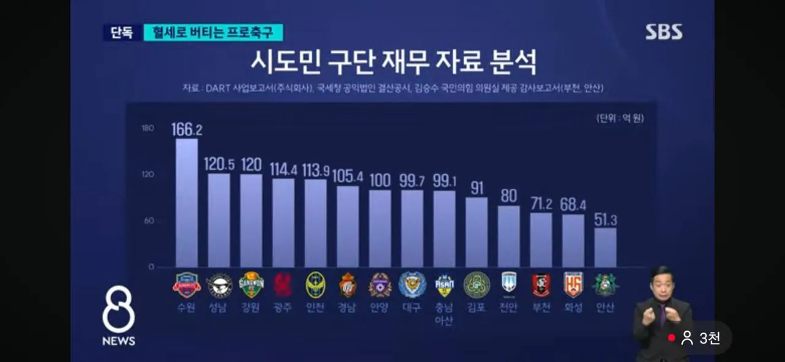
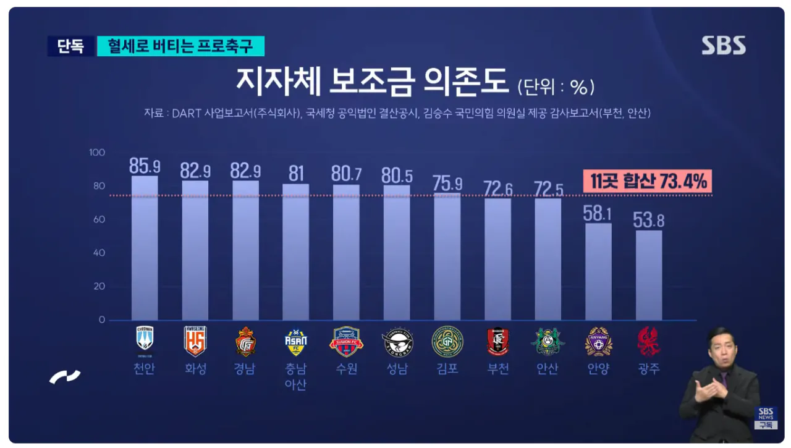
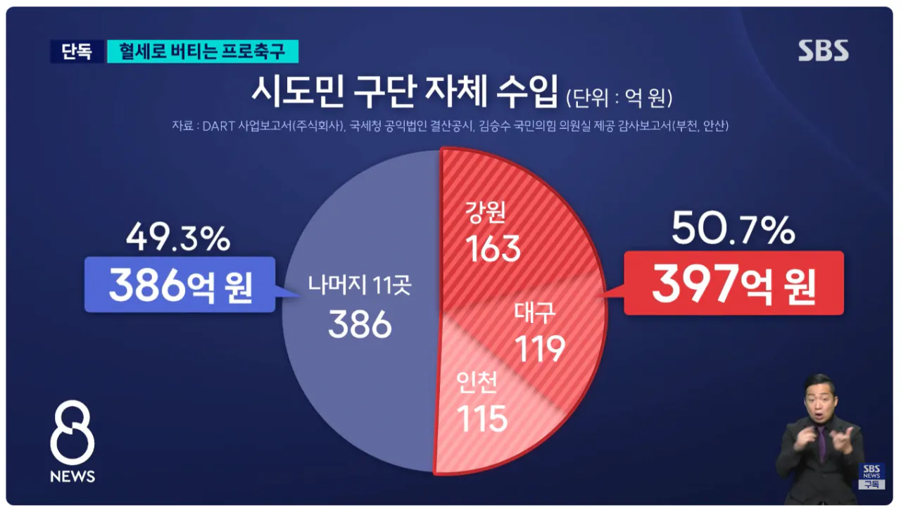
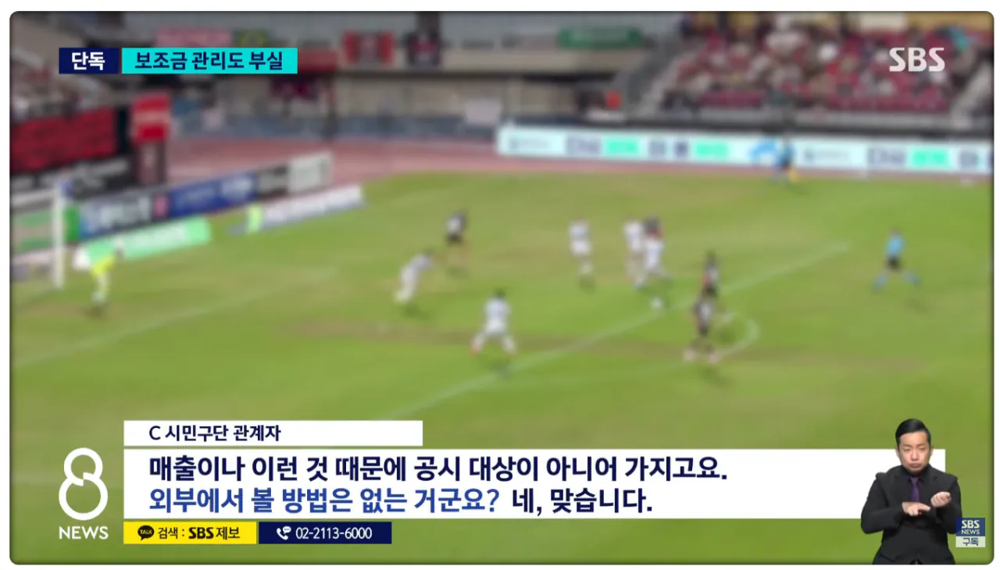

https://m.sports.naver.com/kfootball/article/055/0001396249
미친놈들이네




https://m.sports.naver.com/kfootball/article/055/0001396249
미친놈들이네
세금으로 2부따리 외국인선수 연봉 30억씩 꽂아주고있고
K 2 3 4까지 포함해서 연간 2000억 들어가고
경기장이나 기타비용 포함하면 3600억씩 들어가는중
수원 저건 죄다 삼성전자 세금인거냐 ㅋㅋㅋ
ㅋㅋㅋㅋ 저정도면 삼성이 수원에 낸 세금 페이백하려고 구단운영하는거 아님? ㅋㅋㅋㅋㅋㅋ
그건 수원 삼성이고 조기 나온 시민구단은 수원FC잖아
둘이 다른 구단임
수원+경기도에 삼성이 세금 존나 내니깐 결국 삼성 세금으로 돌리는거긴 한지
난 세금팀 존재자체는 용납이 되는데
우승해보겠다고 기업팀보다 예산 많이 쓰고
외국인 용병 10억 넘게 주고 쓰고 이런건 이해가 안됨
본토 잉글랜드에서도 시민구단 이런곳은 진짜 개똥꼬쇼하는걸로 알고있는데 개펑펑써재끼네
예전에 어디서 본 건데 일본에도 시민구단 있다던데 그팀들은 경기장 사용료정도만 지자체 지원받고 그외에는 스스로 벌어서 선수들 연봉도 최저임금급으로 주며 운영하며 자립경영한다던데
세금 기생충만 바글거리는 한국 개리그판이랑 참 많이 비교된다
공놀이하는데 왜 세금을줘
축구도 승강만 없으면 기업끼고 할수는 있을텐데
기생축구는 빨리 망하라고~
2부 붙박이새기들은 진짜 너무한거 아니냐
세금낭비좀 줄이자
저런것들도 다쳐내고
시발 시민단체들 눈먼돈좀 쳐내고 진짜
뉴스에 계속 나와도 안없애는거 보니 그냥 죄다 한통속임
옳그떠들 치적(?)이라고 세금 절대 안끊는다던데 어이가 없어서ㅋㅋㅋㅋ
그렇다고 국민이 저걸 없애자고 강하게 결집할만큼 의식이 있는 것도 아니라서
진영논리에 경도되어 악쓰다가 그냥 물처럼 녹아 없어지겠지
한국 진짜 돈 존나많아 ㅋㅋㅋ
저깟 공놀이에 돈 막 퍼부어주는거 봐라 ㅋㅋㅋ
이공계 장학금을 저리 줘봐라 ㅋㅋㅋ
석박사급 한테는 연봉 5000따리 주면서 공놀이엔ㅋ
그러니까 성적이 그 모양이지
공놀이에 세금을 왜 쳐바르는거임
시민구단이라는 워딩이 존나 폭력적임 ㅋㅋ
시민들의 펀딩으로 굴러가는 구단같음 ㅋㅋ 실상은 세금
아 세금도 사실 펀딩인가..?
이런게 재정빨대 아닌가?..
1차로 반토막은내야한다고봄 자구책없으면 해체좀해라
반토막낸거 유소년시설이나 강화해
갈아엎어야 하는데 진짜
니네끼리 하는 공놀이에 세금을 왜 쳐넣어야 하냐고
세금 줄줄세네 ㅋㅋㅋ
타노스 두번해라
저 돈을 공학연구에나 쓰지.
공놀이 ㅅㅂ 관객도 없는데 이돈으로 박사급 돈이나챙겨줘서 인재유출이나막지
일단 지역마다 하나씩 있는 종합운동장 이걸 폭파시켜야됨 괜히 놀고 있으니까 어? 축구구단이나 한번? 이렇게 되는거 같아서
축구단 한 번? 하고 짓는 곳들도 많음
강원이 꽤 높은데 왜지
저것도 잘 봐야하는게
강원랜드에서 스폰비용을 연간 50억 가까이 받거든
강원랜드가 사기업은 아니지?
다른데도 마찮가지임
스폰서 목록보면 공기업+시금고 수준이야
강원랜드면 그나마 다행이긴하네
거긴 공기업중 수익 잘 나오는 거의 유일한 곳이라..
도박한돈이 저기로가네
어차피 요즘 A매치 죠지든 관심도 없는데
그냥 쓸데없는거 줄이지
돈아깝다 진짜
줄여 씨발 뭐하는거야 진짜 관심도 없는 공놀이 이제는 자생이나 하라고 해라
성적도 ㅈ박는데 도대체 유지해야할 필요가 있나 옳그떠들 밥줄이랑 연관돼서 절대 안사라지겠지만
기업한테 스폰받고 해야지 뭔 시발 ㅋㅋ
그 와중 부산은 없네
부산은 기업구단이야
시발 세금이 쳐 들어가는데 그걸 왜 못봐?
진흥을 위해서 세금으로 밀어줄 필요 자체는 있다고 보는데
근데 시발 그 비율이 말이 안 되네 ㅋㅋㅋ 난 뭐 40% 이런줄 알았지 ㅋㅋㅋㅋ
ㅈ도 의미없는 공놀이 따위에 저돈 쓰는거 ㅈㄴ 아깝다.
축빠새끼들이 화력은 존나쎄서 저거 깍으려고하면 존나 우르르 몰려옴
그리고 국감나와서 돈 더내놔 시전함 ㅋㅋㅋ